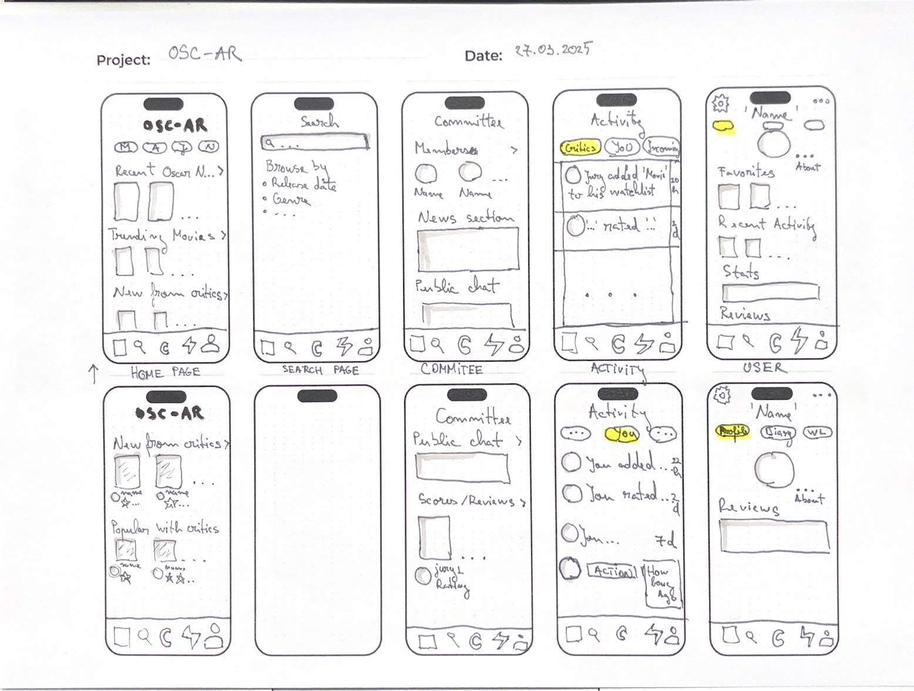
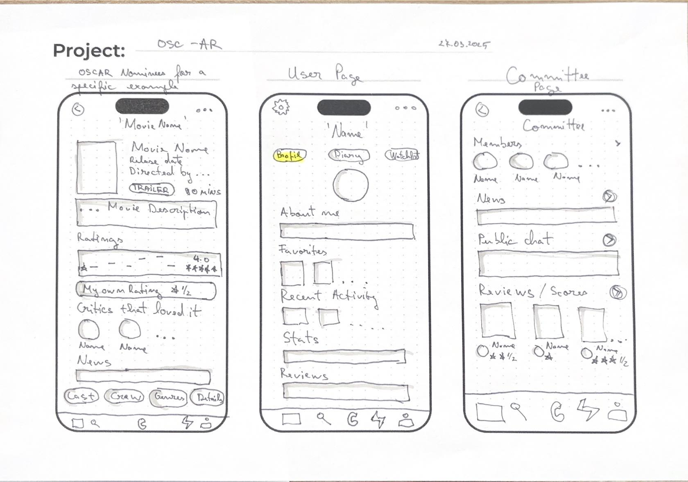
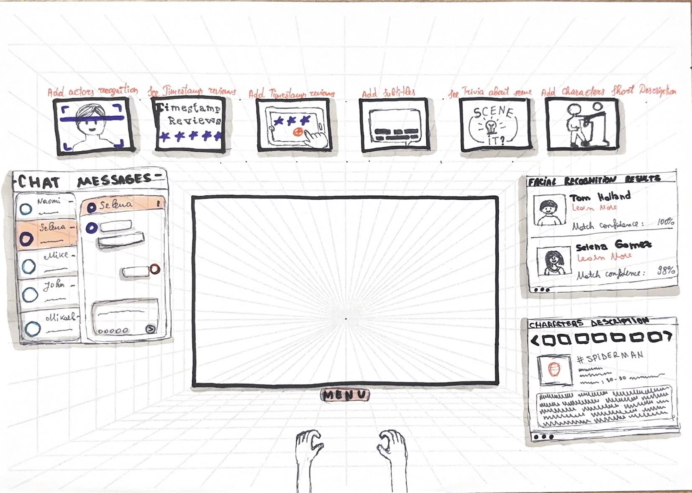
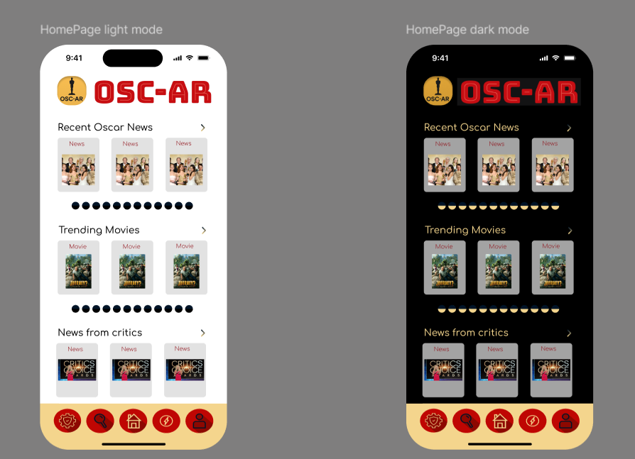
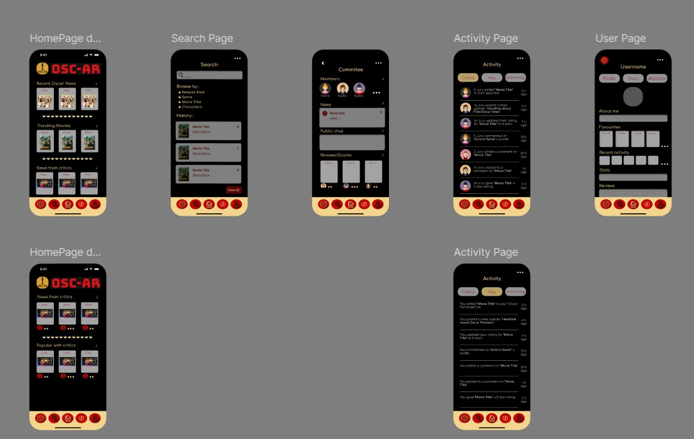

Data: 21.05.2025
Acest proiect a fost realizat de: Bejenaru Ioan-Matei , Grozea Tatiana , Ilisei Daria-Stefania , Popa Ioana-Alexia
OSC-AR este o aplicație mobilă și VR dedicată criticilor de film care fac parte dintr-un juriu Oscar. Aceștia pot evalua, comenta și viziona filme nominalizate într-un mod colaborativ și interactiv, folosind atât dispozitive mobile, cât și headset-uri VR.
În dezvoltarea interfeței OSC-AR, am aplicat principii de interacțiune centrate pe utilizator, asigurând o navigare intuitivă, claritate vizuală și coerență între platforme (mobil și VR). Mai jos sunt prezentate principalele patternuri de interacțiune identificate în aplicație:
În partea de jos a fiecărui ecran mobil se regăsește o bară de taburi fixă, cu 5 pictograme intuitive care oferă acces rapid la cele mai importante secțiuni ale aplicației: setări, căutare, homepage, activitate și profilul utilizatorului. Această abordare reduce efortul cognitiv și facilitează orientarea în aplicație.
Informațiile despre filme, utilizator. Acestea pot fi apăsate pentru a deschide detalii suplimentare și sunt structurate ierarhic pentru a atrage atenția pe cele mai relevante date ( afiș film, scor, critic).
Pagina de căutare permite utilizatorului să filtreze filmele după mai multe criterii: titlu, gen și personaje. Această interacțiune combină căutarea clasică cu un sistem de browsing categorial, pentru flexibilitate și eficiență.
Aplicația oferă feedback constant prin ratinguri, filtre evidențiate, precum și badge-uri pe profiluri. Acest feedback ajută utilizatorul să înțeleagă instant starea fiecărui element din aplicație.
În modul VR, utilizatorul poate interacționa cu aplicația prin gesturi (selectarea unui meniu, scroll între informații), iar ecranul este înconjurat de un HUD (Heads-Up Display) cu detalii contextuale: recenzii sincronizate cu timestamp, subtitrări, trivia sau recunoaștere facială a actorilor. Interfața este gândită să nu blocheze filmul, ci să-l îmbogățească.
Designul aplicației OSC-AR a fost inspirat de estetica Premiilor Oscar, îmbinând eleganța cinematografică cu accesibilitatea funcțională. Alegerea culorilor, a modurilor vizuale și a iconografiei a fost făcută pentru a crea o experiență coerentă atât în aplicația mobilă, cât și în interfața Mixed Reality.
Paleta cromatică a fost aleasă pentru a reflecta universul vizual Oscar:
Aplicația este complet adaptabilă în mod light și dark. Această funcționalitate îmbunătățește confortul vizual și accesibilitatea, oferind utilizatorilor posibilitatea de a alege modul potrivit pentru contextul lor (zi/noapte, interior/exterior).
Interfața OSC-AR utilizează pictograme personalizate, dezvoltate separat pentru:
Toate paginile (homepage, căutare, profil, activitate, film) respectă o structură consistentă: bară de navigare fixă jos, carduri interactive pentru conținut, ierarhie vizuală clară, fonturi lizibile și spațiere coerentă. Această consistență reduce timpul de învățare al interfeței și ajută utilizatorul să se concentreze pe conținut, nu pe interacțiune.
Aplicația OSC-AR este organizată pe secțiuni clare, fiecare având roluri bine definite în procesul de colaborare, evaluare și informare în cadrul juriului Oscar. Interacțiunea dintre aceste funcționalități creează o experiență completă, profesională și intuitivă.
Pagina principală oferă un overview al conținutului de actualitate:
Pagina de căutare permite utilizatorului să descopere filme în mod personalizat:
Secțiunea dedicată colaborării între membrii juriului:
Secțiunea „Activitate” oferă transparență și context despre activitatea ta și a altor utilizatori:
Pagina de profil permite personalizarea experienței:
Pagină individuală pentru fiecare film nominalizat:
Aplicația OSC-AR include o componentă de Virtual Reality (VR) inovatoare, destinată criticilor de film care vizionează filmele nominalizate în format imersiv. Folosind un headset VR, jurații pot interacționa cu conținutul în timp real, fără a întrerupe vizionarea, ceea ce oferă o experiență unică de evaluare profesională.
Atunci când un actor apare pe ecran, sistemul activează automat o fereastră laterală cu informații despre acesta: nume, filmografie, rol, și un procent de încredere. Această funcție ajută jurații să identifice rapid actorii și să acceseze date relevante.
Utilizatorii pot accesa informații interesante despre scena curentă: locație, context istoric, inspirație, simbolistică. Acestea apar într-un overlay lateral, fără a distrage complet atenția de la film.
Jurații pot evalua scene specifice exact în momentul în care apar. Folosind un sistem de „timestamp”, notarea unei scene este înregistrată cu secundă exactă, oferind feedback detaliat despre ritm, interpretare sau regie.
Utilizatorii pot activa subtitrări vizuale direct din headset și pot naviga prin meniuri sau opțiuni prin gesturi simple (mâini recunoscute în sistem). Astfel, se menține interacțiunea hands-free și fluidă.
În partea stângă a ecranului, jurații pot discuta în timp real cu alți membri ai comitetului. Chatul funcționează ca un spațiu de dezbatere sincronă: se pot trimite mesaje, reacții sau întrebări fără a opri proiecția.
Procesul de design al aplicației OSC-AR a început cu o serie de sketchuri de mână, menite să definească rapid structura interfeței și principalele fluxuri de utilizator. Aceste schițe au permis echipei să experimenteze rapid idei și să valideze direcția generală de interacțiune.
Ulterior, interfețele au fost transformate în mockup-uri high-fidelity în Figma. Aici s-au definit:
Designul final este coerent vizual în toate ecranele aplicației și asigură o experiență unificată, indiferent de platformă (mobilă sau VR).
